Download/Instalação do FluidSIM 3.6: Youtube: Simulador Festo FluidSIM - Como Baixar? (UP Educação Profissional; 10/04/2020).
FluidSIM 4.2 --> Google Drive: bit.ly/2xlCrMG - Bruno Cimirro, 9/04/2020.
Simbologia Válvulas:
YouTube: Simbologia Válvulas Direcionais (Parte 01) (UP Educação Profissional; 28K visualizações; 21/03/2019) - Norma NBR 8897:
Na parte um (1) desta aula de simbologia das Válvulas Direcionais, faremos uma breve introdução de como as válvulas direcionais são classificadas, quanto: - ao numero de posições; - numero de vias; - posição inicial; - NA ou NF; - tipo de centro; - tipos de acionamentos e; - tipos de retorno. E já apresentaremos o que são as posições de uma válvula e as vias de uma válvula direcional.
YouTube: Simbologia Válvulas Direcionais (Parte 02) (UP Educação Profissional; 68K visualizações; 21/03/2019)
Na parte dois (2) desta aula de simbologia das Válvulas Direcionais, é apresentado como fazemos para identificar as vias e as posições em uma válvula direcional, e como fazemos para nomeá-las conforme a norma ISO 1219. Este conteúdo é apresentado de forma bastante didática e com cinco exemplos, de tipos de válvulas direcionais.
YouTube: Simbologia Válvulas Direcionais (Parte 03) (UP Educação Profissional; 34K visualizações; 21/03/2019)
Na parte três (3) desta aula de simbologia das Válvulas Direcionais, é apresentado os tipos de acionamentos e retornos das válvulas direcionais, conforme a norma ISO 1219. Este conteúdo é apresentado de forma bastante didática e com vários exemplos.
Videos
Circuitos pneumáticos
Video: VÁLVULAS NEUMÁTICAS Y CILINDROS NEUMÁTICOS (296K visualizações, 24/02/2018; 5300 gostei; 30 minutos; Neheyler Mechatronics). Página inicial da NEHEYLER MECHATRONICS --> https://www.neheylermechatronics.com
Fer - 23/02/2022.
Curso de Pneumática Básica --> Vídeos YouTube da Neheyler Mechatronics --> página inicial (71K visualizaçÕes; 22/02/2020). São 15 lições:
1. Pneumática Básica: Introdução | Princípios (10:25)2. Compressor Pneumático | Unidade de Preparação (7:31)3. Válvulas Pneumáticas e Cilindros Pneumáticos (8:32)4. Conexões Básicas - Válvulas e Cilindros (5:56)5. Válvulas Lógicas | Pneumática (10:02)6. Funções lógicas com circuitos Pneumáticos (15:34)7. Equações booleanos com circuitos pneumáticos (5:42)8. Fins de curso pneumáticos | rodízios (10:03)9. Como resolver problemas ou Exercícios de Análises (11:24)10. Comando direto de indireto pneumático (11:33)11. O que é uma sequencia pneumática? (11:14)12. Método Intuitivo pneumático | Sequencias (10:02)13. Método cascateado pneumático | Sequencias (13:46)14. Método cascateado pneumático | Sequencias (10:43)15. Método Paso a paso | Sequencia (12:32)
YouTube: VÁLVULAS NEUMÁTICAS Y CILINDROS NEUMÁTICOS: Neheyler Mechatronics; 299K visualizações; 8:31… Material muito bom sobre válvulas.
En este vídeo se muestra y explica los tipos de válvulas distribuidoras, sus configuraciones, tipos de accionamientos configuración interna; ademas, los tipos de cilindros neumáticos mas usados.
Este mesmo autor sugere outros videos:
VÍDEOS RELACIONADOS:
👉 Neumática Introducción: https://youtu.be/gbQ3JBcjHFI
👉 Compresor Neumático y FRL: https://www.youtube.com/watch?v=83IFw...
👉 Neumática Básica➡ https://youtu.be/8AesMeRI6j8
👉 Válvulas Finales de Carrera➡ https://youtu.be/mK9tzdc8egA
👉 Qué es una Secuencia Neumática: https://www.youtube.com/watch?v=fcK53...
👉 Método Intuitivo: https://www.youtube.com/watch?v=kq108...
👉 Método Cascada 1: https://www.youtube.com/watch?v=_NeUd...
YouTube: CONEXIONES BÁSICAS - VÁLVULAS Y CILINDROS EN FLUIDSIM: Neheyler Mechatronics; 261K visualizações; 5:55. En este video se muestra y se explica como hacer conexiones en FluidSIM, como conectar válvulas y cilindros, etc; con una explicación sencilla didáctica de algunos componentes usados en este video. *Cilindros simples (poderia ser usado para "Lab 1") e de duplo efeito: 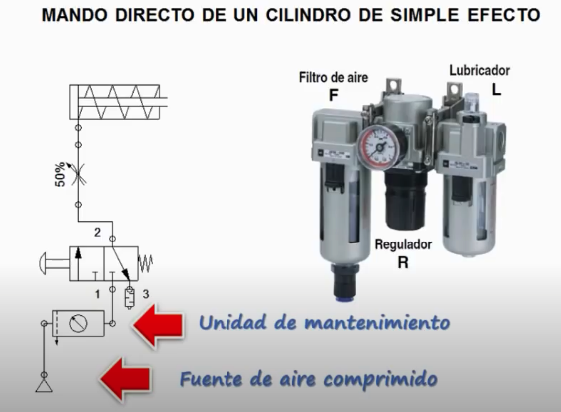 Detalhe do primeiro circuito: 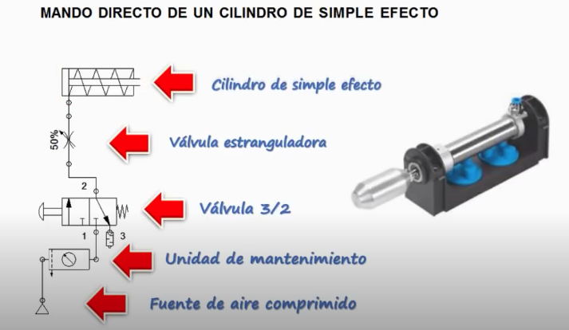
E talvez "Lab 2": 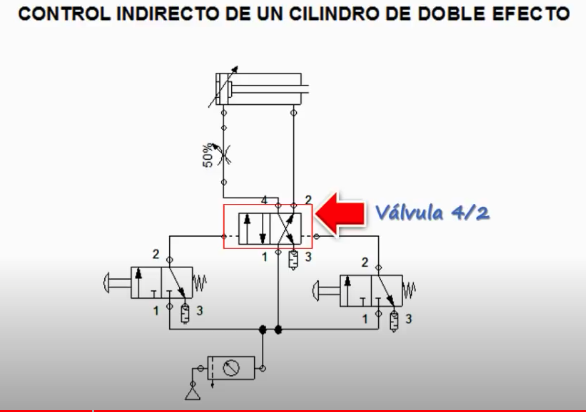
Detalhes sobre conexões para escape de ar: 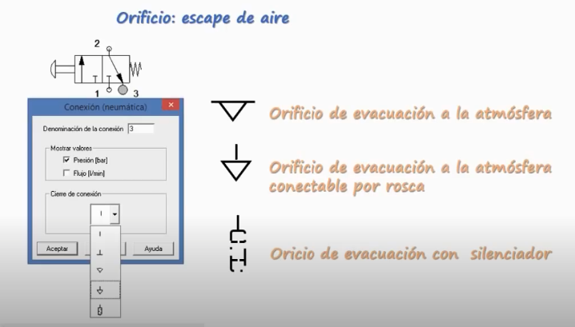
YouTube: Neumática Industrial, ¿Cómo Trabaja un Sistema Neumático?: Parker Products and Support; 971K visualizações; 8:16 – Falta verificar este video tão acessado! En el video podemos observar cómo funcionan los sistemas neumáticos industriales, paso a paso se muestra y describe el papel que tiene cada componente utilizado en la red de aire comprimido, el cual generalmente será utilizado para automatizar procesos repetitivos como mover productos o presionar piezas utilizando la neumática como la fuerza motriz para realizar estas tareas.
Mix de Parker Products and Support: https://www.youtube.com/channel/UCe74hvmtnVrXfZPBofJ_GJA
"FluidSim Eletropneumatica Aula 1" no YouTube, do Enéias Belan, 20,5K visualizações. -- +/- já inicia colocando válvulas e outros componentes mas sem exlicar muito bem porque está montando circuito daquela forma ou como configurar componentes: 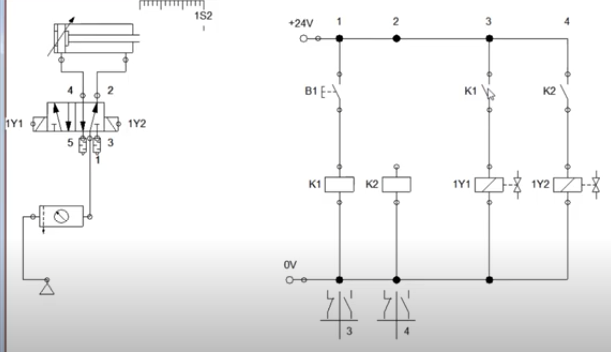
Outro vídeo que parece interessante –> Sensores no FluidSim, do Enéias Belan; 5,1K visualizações, 10:54:
 Parece que usa presostato além de chave de fim de curso (ou sensor magnético/indutivo)…
Parece que usa presostato além de chave de fim de curso (ou sensor magnético/indutivo)…
"Circuito pneumático FluidSIM atuador de dupla ação" no YouTube: 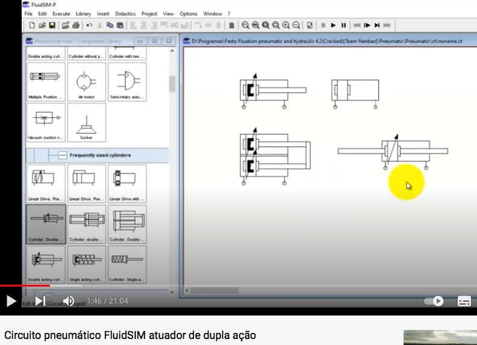
"Projeto Exemplo FluidSIM 5 - Elevador de Cargas (Simplificado)" no YouTube - da própria FESTO, Algo Chato.... Demorado (26:13). Não muito didático. Não inicia pelo compressor. Não nomeia solenóides da válvula 5/2. E não explica porque está arrastando certos componentes enquanto faz conexões: 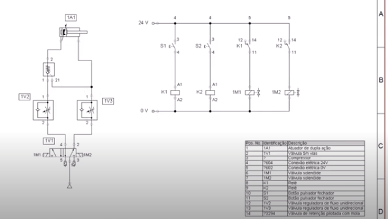
Blog sobre Pneumática e Hidráulica com teoria e vários exemplos, muitas figuras ilustrativas --> Eletropneumática e Eletro-hidráulica, Prof. Sinésio Gomes (março/2022).
"Entenda o funcionamento de uma válvula 5 vias 3 posições." no YouTube: 1,8K visualizações; Fluir Automação; 1:26 (video rápido).
Vídeo Contador-Temporizador en fluidsim secuencia A+B+A-B-: Variedad Académica; 77,9K visualizações; 12:41 - Sequencias diretas e indiretas; método direto (ou intuitivo): 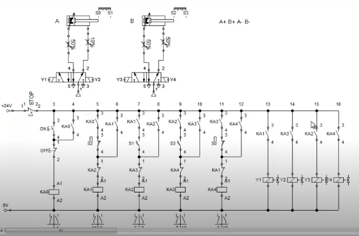 Acompanha Blog em: http://variedadacademia.blogspot.com - 8/04/2015.
"1 - Vídeo Aula automação pneumática (Início simulação FluidSim)" no YouTube, Prof. Pedro XX, 71K visualizações. 24/10/2014 -- este parece mais "didático". Inicial com compressor e unidade conservadora. <-- Parece melhor – Usar como primeiro video uso FluidSim.
"Simulador Festo FluidSIM - Como Baixar?" no YouTube
Apostila Festo FluidSim — Páginas Pessoais - UTFPR - em português, para versão 3.6(!) do FluidSIM
Outro video: 2 - Vídeo Aula automação pneumática (Método Intuitivo FluidSim) (Prof. Pedro Henrique de Jesus; 18,8K Visualizações; 19:06) – video confuso… longo… não recomendado (Fer: 17/03/2022).
Pneumática básica: simbologia y trazos (LISA-LAB; 38 K visualizações, 2021)
Pneumática 1: Princípios Básicos (Carlapedia; 111 K visualizações, 2021). Video feito com KineMaster.
YouTube: SIMULACIÓN DE CIRCUITOS NEUMÁTICOS EN FLUID SIM: Lisa-Lab; 36,6K visualizações; 25:40 (video longo), em espanhol: 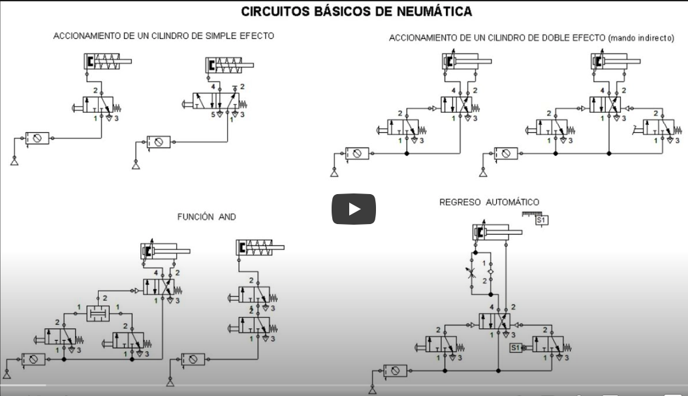
Youtube: NEUMÁTICA BÁSICA (Simbología y Trazos Neumáticos): Lisa-Lab; 41K Visualizações; 34:45 (video londo), em espanhol.
YouTube: Introducción a circuitos neumáticos: Abel Vila; 187K visualizações; 9:51; espanhol: 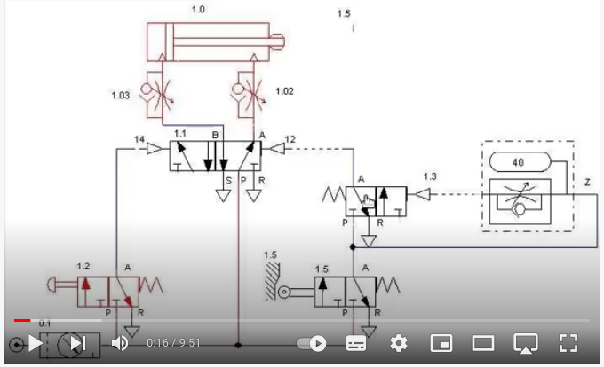
YouTube: EJERCICIO BÁSICO DE ELECTRONEUMÁTICA: CCTI Eléctricidad & Automatización; 161,4K visualizações; 18:39. La Electroneumática es una de las técnicas de automatización que en la actualidad viene cobrando vital importancia en la optimización de los procesos a nivel industrial. Su evolución fue a partir de la neumática, disciplina bastante antigua que revolucionó la aplicación de los servomecanismos para el accionamiento de sistemas de producción industrial. Con el avance de las técnicas de electricidad y la electrónica se produjo la fusión de métodos y dando así el inicio de los sistemas electro-neumáticos en la industria, los cuales resultaban más compactos y óptimos a diferencia de los sistemas puramente neumáticos.
Idéia de Lab Eletro-Pneumático: Um bom video de eletrônica-pneumática usando sensores ☞ YouTube: Sensores no FluidSim: Enéias Belan; 5,1K Visualizações; 10:54 – Circuito: um atuador avança quando se pressiona botão (elétrico) ao mesmo tempo em que for detectada a presença de uma peça; O atuador avança até o final de curso e então deve parar; Cilindro só volta quando estiver atuando final de curso e for pressionado um botão: 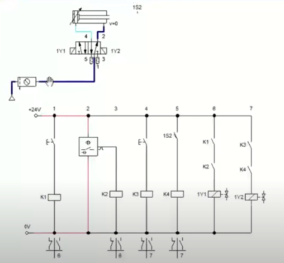
Mas, antes deste experimento acima, iniciar com outro video do Enéias Belan: YouTube: FluidSim Eletropneumatica Aula 1; 20,5K Visualizações; 16:36. *Neste video, ele ensina como se começa a fazer circuito eletrônico-pneumaticos, começando com: * Exp_1) exemplo simples como acionar pistão simples usando válvula 3/2 com retorno por mola e acionado por solenóide; O avanço do cilindro é controlado por botão NA (elétrico).: 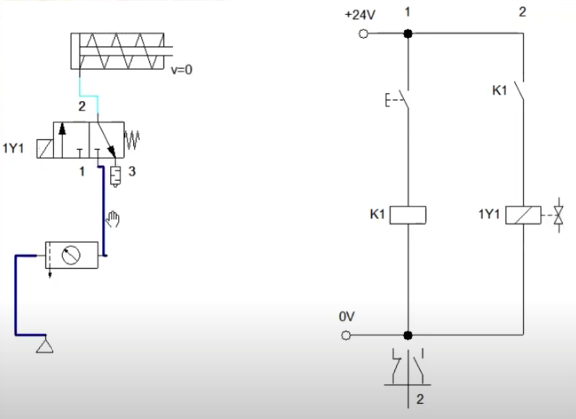 e Exp_2: uso de cilindro de dupla ação controlado por botões NA. Neste caso, foi usada uma válvula 5/2.: 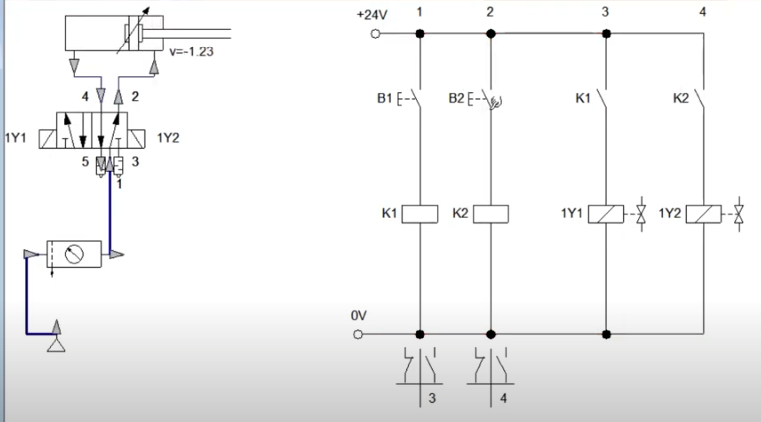
Circuitos Hidráulicos
YouTube: SIMULACIÓN DE CIRCUITOS HIDRÁULICOS*: 103K Visualizações; Ingeniería Mecatrônica; 46:47 (video longo), em espanhol (Colômbia). Experimentos: 1) Acionamento de cilindro de efeito simples usando válvula 3/2 com tanque de retorno e válvula limitadora de pressão; 2) Acionamento de cilindro duplo com válvula 4/2. 3) outros…
YouTube: SIMBOLOGÍA SISTEMAS HIDRÁULICOS (ISO 1219): 55,2K Visualizações; Ingeniería Mecatrônica; 27:13.
YouTube: COMPONENTES DE UN SISTEMA HIDRAULICO - LUIS MELENDEZ: 189K visualizações; Alex de La Peña; 9:56. Itens: 1) Bomba, 2) Válvulas de alivio ou limitadora, 3) Válvula reguladora de pressão; 4) Cilindro de efeito simples; 5) Cilindro de efeito duplo.
YouTube: CIRCUITO HIDRÁULICO BÁSICO | ANIMAÇÃO: Neheyler Mechatronics; 44,2K Visualizações; 2:21: 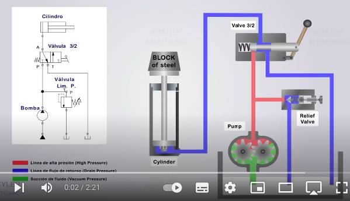
YouTube: Hidráulica - Caudal y Velocidad: Luis Meléndez; 367,3K Visualizações; 4:24.
YouTube: Hidráulica - Válvulas Distribuidoras: Luis Meléndez; 375,7K Visualizações; 10:39.
YouTube: Hidráulica Básica 1.2 - ¿Cómo Se Transmite La Fuerza Fluida?: Aceros y Sistemas Hidráulicos De México; 543,6K Visualizações; 5:39. En este video de Hidráulica Básica se muestra cómo se transmite la fuerza fluida, cómo funciona un sistema hidráulico y una comparación entre un sistema hidráulico y un sistema neumático. Vea más información y conozca nuestros productos en nuestra página.
Fernando Passold, Fev/Março 2022.